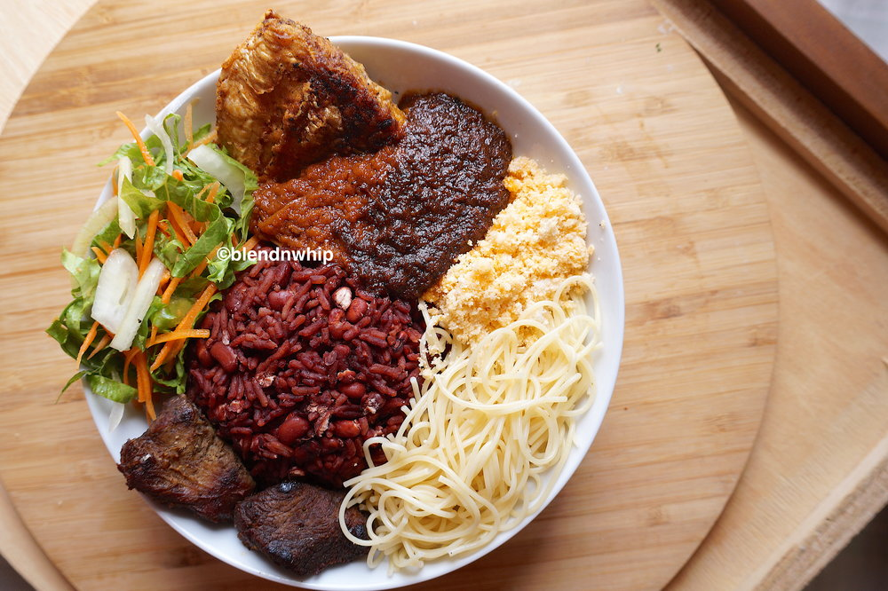

Waakye

Description
Waakye is a Ghanaian dish of cooked rice and beans, commonly eaten for breakfast or lunch. However, others eat it for supper. The rice and beans, usually black eyed peas or cow beans, are cooked together, along with red dried sorghum leaf sheaths or stalks and limestone
Ingredients
- beans
- rice
- salt
- waakye leaves
- eggs
- gari
- spaghetti
- fish
Steps
- Boil the peas
- Put the rice on fire to boil
- As the rice starts to slightly boil, pour the boiled peas
- Add a few waakye leaves
- stir intermitently until the rice is cooked
- take the leaves out
return to home page